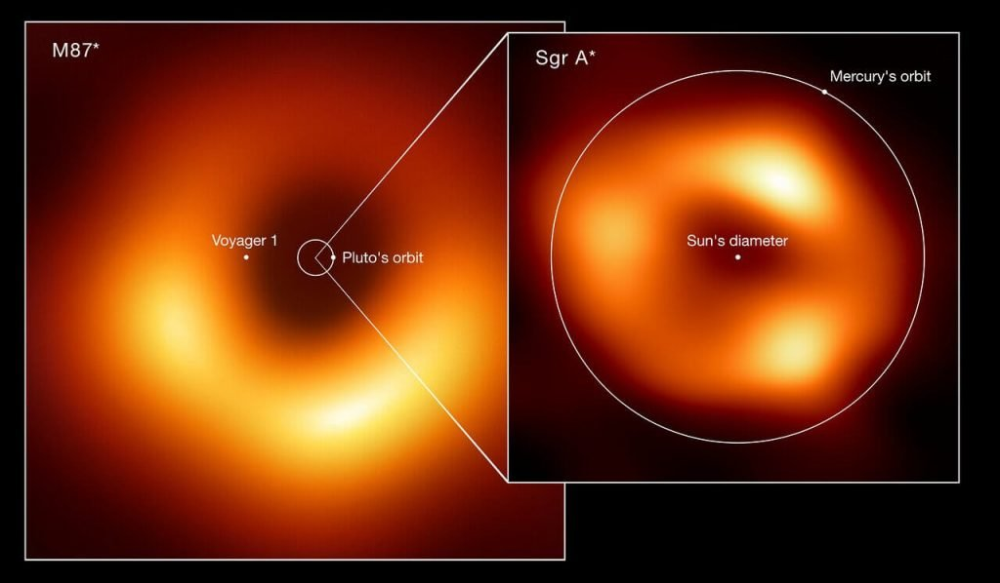
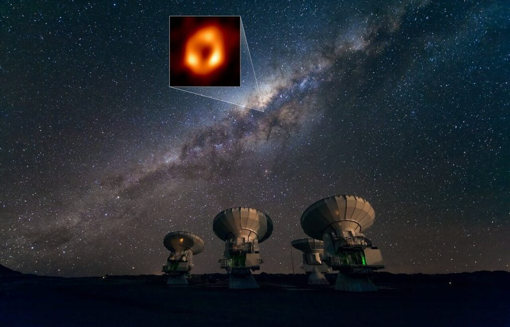

Black hole ရဲ့ ပုံကို ရိုက်ယူနိုင်ဖို့ ကမ္ဘာ တစ်ဝန်းလုံးမှာ ရှိတဲ့ ရေဒီယို တယ်လီစကုပ် တွေ အများအပြား စုပေါင်းပြီး စကြာဝဠာ ထဲက ရှာတွေ့ ပြီးခဲ့ သမျှထဲမှာ အကြီးဆုံးလို့ ယူဆရတဲ့ တွင်းနက် ကြီး တစ်ခုကို ပူးတွဲ လေ့လာ ခဲ့ကြပါတယ်။
တွင်းနက်တွေဟာ တကယ်တော့ မူရင်း အလင်းရောင် မရှိပါဘူး။
သူ့ နယ်နိမိတ် (Event Horizon) ကို ဖြတ်သွားတဲ့ အလင်းရောင် မှန်သမျှကို မလွတ်တမ်း ဖမ်းဆွဲ ထားလိုက်တာမို့ တွင်းနက် တွေကနေ ဘာ အလင်းရောင်မှ ထွက်လာနိုင်ခြင်း မရှိပါဘူး။
ဒီလို တွင်းနက်ထဲကို စီးဝင်သွားတဲ့ ဓါတ်ငွေ့တွေဟာ ဝဲဂယက်ကြီး တစ်ခုလို လည်ပတ်ပြီး စီးဝင် သွားပါတယ်။ ဒီ ဓါတ်ငွေ့တွေဟာ အလွန် ပူပြင်း လာပြီး သူတို့ကနေ အလင်းရောင် ထွက်ပေါ် လာပါတယ်။
ဒါ့ကြောင့် တွင်းနက်ကို မမြင်ရ ပေမယ့် တွင်းနက်ရဲ့ ပတ်ခြာလည်က ပူပြင်း တောက်ပတဲ့ ဓါတ်ငွေ့ ဝဲဂယက် ကြီးကိုတော့ မြင်တွေ့နိုင်မှာ ဖြစ်ပါတယ်။

ဒီ ဝဲဂယက် ကြီးရဲ့ အလယ် ဗဟိုက အမဲရောင် စက်ဝိုင်း ဧရိယာ ကလေးကို တွေ့မှာပါ။ ဒါဟာ တကယ်က တွင်းနက်ရဲ့ နယ်နိမိတ် (even horizon) မဟုတ် သေးပါဘူး။
ဒီ အမည်းရောင် ဧရိယာ ကလေးဟာ တကယ်က တွင်းနက်ရဲ့ အရိပ် ဖြစ်ပါတယ်။

ဒီ အလယ် ဗဟိုက အမည်း ဧရိယာရဲ့ အကျယ် အဝန်းဟာ တွင်းနက်ရဲ့ ဆွဲငင်အား ပေါ် မူတည်သလို တွင်းနက်ထဲ စီးဆင်းနေတဲ့ ဓါတ်ငွေ့တွေရဲ့ ပမာဏ ပေါ်လဲ မူတည်ပါတယ်။ ဒါ့အပြင် တွင်းနက်ရဲ့ လည်ပတ်နေတဲ့ လည်ပတ်နှုန်း ပေါ်လဲ မူတည်နေ ပြန်ပါတယ်။
အခု ဓါတ်ပုံမှာ တွေ့ရတဲ့ တွင်းနက်ဟာ M87 ဆိုတဲ့ တွင်းနက် ဖြစ်ပါတယ်။ ဒီ တွင်းနက်ရဲ့ ဗဟိုမှာ နေအလုံးပေါင်း ၆ သန်း လောက်နဲ့ ညီမျှတဲ့ ဒြပ်ထုကြီး ရှိပြီး ဒီ ဗဟို အူတိုင်ဟာ လျင်မြန်တဲ့ အလျင်နဲ့ လည်ပတ် နေပါတယ်။

ဒီ လေ့လာမှုက အိုင်းစတိုင်းရဲ့ ဆွဲငင်အားနဲ့ ပါတ်သက်တဲ့ သီအိုရီ မှန်ကန်ကြောင်း သက်သေ အထောက်အထား အများအပြား ပေါ်ထွက် လာခဲ့ပါတယ်။
ဒီ့နောက်မှာတော့ Event Horizon Telescope ကြီးကို အသုံးပြုပြီး အခြား တွင်းနက်တွေကို ဓါတ်ပုံ ရိုက်ယူ နိုင်ခဲ့ ပါတယ်။
လက်ရှိမှာတော့ ဒီ တယ်လီစကုပ် ကြီးကနေ မစ်ကီးဝေး ဂလက်ဆီရဲ့ ဗဟိုက မဟာ တွင်းနက်ကြီး (Super massive black hole) ကြီးကို တိုက်ရိုက် လေ့လာနိုင်ဖို့ ကြိုးစားနေ ပါတယ်။
